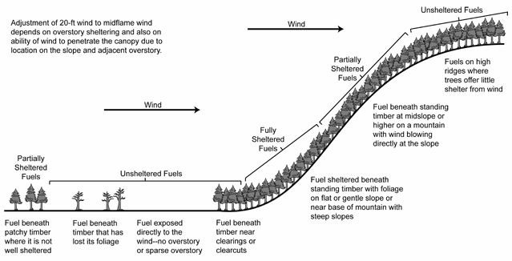

|
Wind Adjustment Factor |
Wind adjustment factor (WAF) is a value between 0 and 1 and is used to adjust the wind speed measured 20-feet above the vegetation to midflame wind speed.
Wind adjustment factor depends on sheltering of fuels from the wind. If fuels are not sheltered from the wind, WAF is a function of fuel bed depth. If fuels are sheltered from the wind, WAF is not affected by the surface fuel model. Sheltering is determined by canopy cover and by position on the slope. If WAF is calculated, then the user should be cautious of terrain and canopy features that are not inputs to the model. It may be preferable to use your expert judgment to enter WAF directly.
If Wind speed is entered as 10-m wind and Input (or Calculated) wind adjustment factor is selected, then the 10-meter wind speed is divided by 1.15 to get 20-foot wind speed. The wind adjustment factor is then applied to the 20-foot wind speed.
| I/O | Module | If | Notes |
| Input | SURFACE | If Wind speed is entered as 20-ft (or 10-m) wind and Input wind adjustment factor is selected as an input option. | |
| Output | SURFACE | If Wind speed is entered as 20-ft (or 10-m) wind and Calculated wind adjustment factor is selected as an input option. |
|  |
| Surface fuel sheltering from the wind |
Wind Adjustment Factor (WAF) |
Fuel Model |
|---|---|---|
Unsheltered
|
0.5 |
(depth < 0.9 ft, < 0.3 m) |
| 0.4 |
(depth 0.9 - 2.7 ft, 0.3 - 0.8 m) |
|
| 0.3 |
(depth > 2.7 ft, > 0.8 m) |
|
Partially sheltered
|
0.3 |
|
Fully Sheltered
|
0.2 |
|
| 0.1 |
|